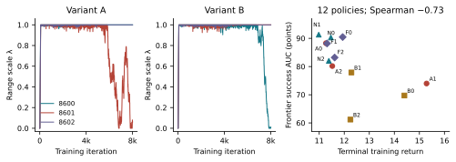
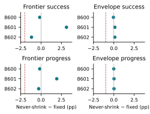
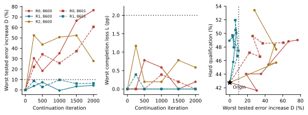
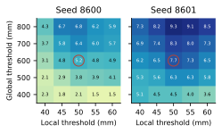
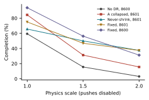

When Training Gets Easier: Range Collapse and Tracking Drift in Humanoid Robustness Training
Working manuscript, September 10, 2026. Diagnostic results retain the September 8 evidence freeze. This revision clarifies the proposed methods and systems direction; the newer three-motion DR screen is documented separately in the project research review. Scientific author review, eligibility confirmation, and submission approval remain open. This notice is excluded from the anonymous PDF.
Abstract
Favorable training scores need not indicate improved robot performance. We present a diagnostic study of two score–behavior discrepancies in simulated humanoid motion tracking. First, all six runs of two shrink-permitted randomization controllers contract their ranges, and two nearly collapse. Across twelve scored policies, terminal return is negatively associated with independently evaluated robustness (Spearman −0.73). A never-shrink projection prevents contraction, but its three-seed comparison with fixed randomization does not establish statistical noninferiority. Second, fixed-mixture hard-condition continuation preserves 100% nominal completion while increasing global tracking error from 127.93 to 225.87 mm. Cached reference-action anchoring limits the endpoint increase to 4.33%, satisfies the complete origin-relative retention rule at all five sampled checkpoints, and improves hard-condition tracking qualification by 5.18 percentage points. A frozen repetition changes only the continuation seed: anchored drift is 6.46% and the qualification gain is 7.72 points; every sampled retention check again passes. Neither unanchored repetition nor a reduced-learning-rate control has a feasible sampled earlier checkpoint. These continuation results concern one trained origin and one motion. The measured failures support evaluating policy improvement on fixed external conditions and robustness gains jointly with origin-relative task retention.
1. Introduction and Closest Related Work
A humanoid training pipeline can appear successful while losing the capability it seeks. A curriculum may improve its monitored score by making practice easier. Even when evaluation conditions remain fixed, completion may conceal departure from the requested motion. These are different measurement failures: one changes the distribution being assessed; the other leaves behavior insufficiently specified by the reported outcome.
We study both in SONIC humanoid motion tracking [12]. Our first question is whether favorable training return corresponds to robustness under independently fixed physical conditions. Among six long runs of two mismatch-driven controllers, every run contracts its range and two nearly eliminate randomization. Those two have the highest terminal returns among twelve scored policies. One loses 14.19 frontier success-AUC points against fixed randomization on the same training seed. Figure 1 links named range trajectories to external outcomes; a noncollapsed run also performs poorly, so range preservation is not sufficient for robustness.
Our second question is whether improved completion under hard conditions preserves the starting motion-tracking skill. Continuation on a fixed practice mixture retains 100% nominal completion while global error grows by 76.56% on one seed and 60.58% on another. Reference-action anchoring yields a feasible protected tradeoff on both seeds. The complete constraints, their margins, and the sampled early-stopping alternatives matter more than a completion-only ranking.
Distribution adaptation. Dynamics randomization broadens simulated training conditions [1–4]. Original ADR uses boundary-conditioned feedback and separate high and low performance thresholds; it permits expansion and contraction [5]. Active randomization, entropy maximization, self-paced learning, and teacher-based curricula choose or adapt training distributions [6–9]. Level-generation and replay methods also alter what the learner encounters [14,15]. Our never-shrink intervention imposes a nondecreasing scalar range on the studied mismatch-driven controller. It is a stricter restriction on this controller, not an implementation of ADR's boundary algorithm.
Easy-distribution concentration is an established concern. LSDR regularizes learned distributions toward a broad prior [18]. DORAEMON maximizes randomization entropy subject to a success constraint and discusses collapse toward easy environments and forgetting during backtracking [7]. Our contribution is the measured humanoid failure regime, the independent evaluation, and the controlled comparison; monotonic projection is an experimental intervention rather than algorithmic novelty.
Behavior preservation. Reference-conditioned control underlies DeepMimic, AMP, SONIC, and BeyondMimic [10–13]. Forgetting during reinforcement-learning fine-tuning is established [19]. PPF adds an expert-action regularizer whose weight reflects the reliability of a model-based controller [17]. We instead cache states and action means from a learned origin. Neither action regularization nor the existence of forgetting is new. The empirical contribution is the joint measurement of completion, global/local motion fidelity, and origin-relative feasibility during hard-practice continuation, including a same-origin seed repetition and a retrospective early-stopping comparator.
Following small-sample reporting guidance [16], we retain the individual training-seed results. The resulting diagnostic lesson is precise: robustness training requires both a fixed external evaluation distribution and an explicit task-retention measurement. Preventing contraction supplies neither by itself. We test two measured countermeasures—range projection and origin-action anchoring—and report what each resolves, the relevant negative comparisons, and the remaining uncertainty.
2. Experimental Protocol
2.1 Task, training, and physical conditions
The claim-bearing testbed is a 29-DoF Unitree G1 in SONIC, with Isaac Lab 2.3.2, Isaac Sim 5.1.0, a 5 ms physics step, and a 50 Hz policy. The primary reference is one four-second walking clip, M1. Historical policies train from scratch for 8,000 PPO iterations with 1,024 environments and 24 transitions per environment per iteration. The actor uses ten-step proprioceptive histories and ten future reference frames through SONIC's token encoder/decoder; evaluation uses the G1 reference encoder. The continuation experiments start from the final historical fixed policy at seed 8600, checkpoint SHA256 prefix e7fe72a0a48d. All continuation seeds share that origin and motion.
For a range endpoint x with nominal value n, scale λ applies n+λ(x−n). Nominal λ=0 removes the six perturbation channels; λ=1 recovers the configured envelope. Material coefficients use midpoint nominal friction and zero nominal restitution.
Table 1. Physical envelope at λ=1. Ranges are uniform; material properties use 64 sampled buckets. The mass factor applies to the torso and wrist-yaw bodies, CoM to the torso, and joint offsets to all joints.
Reset terms restore their stored nominal values before sampling; offsets do not accumulate. Pushes add sampled base velocities, with the interval process retained during evaluation. Extrapolated friction bounds are clipped to [0.05,4], restitution to [0,1], and mass factors to [0.1,10]. Static-friction clipping begins at λ≈1.385, so the 1.5 ladder rung is the first affected. Delay bounds are rounded to the nearest integer before inclusive integer-uniform sampling, held until reset, and constrained by the 12-step actuator capacity used in evaluation. Thus, λ scales nominal parameter ranges, not a perfectly smooth physical-difficulty variable.
Actions are native actor coordinates, clipped to ±20 before the joint-position action term. Each joint's target is its default position plus its action multiplied by 0.25 times its configured effort limit divided by stiffness. These actuator scales remain unchanged during continuation. The actor has no running-mean normalization or batch normalization; the critic uses running statistics. The origin's actor/value parameters and applicable statistics load at continuation start; the actor observation contract is unchanged.
Optimization and reward. PPO uses five epochs and four minibatches per iteration, clipping 0.2, discount 0.99, GAE 0.95, value-loss coefficient 1, entropy coefficient 0.01, gradient-norm cap 0.1, and clipped value loss. The shared policy/value optimizer starts both parameter groups at , with adaptive KL target 0.01 and bounds [,]. This is the recorded optimizer rate; a separate critic-rate configuration field is not an independently executed rate. SONIC's token auxiliary objectives remain active. Tracking reward weights are 0.5 each for anchor position/orientation, 1 each for relative body position/orientation and body linear/angular velocity, and 2 for local five-point tracking. Their exponential error scales are respectively 0.3 m, 0.4 rad, 0.3 m, 0.4 rad, 1 m/s, 3.14 rad/s, and 0.1 m. Penalties weight action-rate squared −0.1, joint-limit violation −10, undesired contact −0.1 (1 N threshold), excess angular motion of wrists/head −0.005 (threshold 1.5), and ankle acceleration squared −. Reward definitions are held fixed across the central comparisons.
2.2 Historical controller census
Table 2. Complete twelve-policy census for the return–AUC correlation. Each row has seeds 8600, 8601, 8602, a from-scratch origin, and the fixed 8,000-iteration endpoint. A separately trained no-randomization policy appears only in secondary checks.
Recorded mode
Label
Recorded range assignment
lucid_rg
A; shrink permitted
All 1,024 environments at λ
lucid_s4_rg
B; shrink permitted
Four fixed cohorts of 256 at λ/4, λ/2, 3λ/4, λ
lucid_ratchet_rg
N; never-shrink
All environments at λ; decreasing proposals rejected
fixed
F; fixed randomization
All environments at λ=1
The difference between A and B is established by saved controller states: B has four equal strata, with environment zero reserved at maximum intensity; A has one. Both use the same recorded PI gains and relative return guard. B's mean assigned intensity is 0.625λ, so its maximum λ does not describe the entire practice distribution.
The mismatch instrument is a frozen temporal VAE trained on 54,338 motion windows from 309 adaptation clips. It maps 16 frames of 29 joint angles through two 64-channel temporal convolutions (kernels 5 and 3, GELU) to a 32-dimensional posterior mean. The instrument compares commanded joint-position targets with achieved joint positions using cosine distance between their embeddings. Overlapping windows come from tracked environment zero at control-step cadence; the controller uses their 90th percentile once per PPO iteration after a ten-iteration warm-up. This is a learned actuator-target mismatch signal, not episodic return or a direct reference-path error.
With mismatch δ, the recorded update is e=0.778−δ, I←clip(I+e,−1,1), u=clip(e+0.02I,−1,1), and proposed λ←clip(λ+0.05u,0,1). The relative guard compares return with the best of eight preceding iterations: two successive values below 75% of that reference halve λ and reset the integral. N projects decreasing proposals back to the current range. Final controller states and traces establish the applied configuration; stale adjacent configuration copies are not treated as arm identity.
2.3 Evaluation, completion, and pose errors
Historical evaluation uses a fixed physics ladder with in-envelope rungs {0,0.25,0.5,0.75,1} and frontier rungs {1.25,1.5,1.75,2}. Each cell runs 512 separately indexed copies of M1, called aliases in the implementation. They repeat one motion with simulator randomization; they are not 512 distinct motions or trained policies. Historical evaluation seeds are 8700–8702 matched to training-seed labels. Continuation uses evaluation seed 8700 and the same 512-copy panel in both campaigns. Alias indices and aggregate draw telemetry do not establish identical perturbation streams after policy-dependent resets. We therefore make no paired-rollout uncertainty inference. Historical policy contrasts are paired by training seed only.
Evaluation starts at the first reference frame, initializes reference joint/base state, and disables training-only pose/velocity reset jitter while retaining the specified physics randomization and pushes. The scored horizon is 200 control steps (4 s). Completion is the fraction reaching the clip end without a non-timeout termination. Anchor-height and wrist/ankle-height discrepancies terminate above 0.5 m (relaxed to 0.75 m when the running reference root height is below 0.5 m); squared anchor-orientation error terminates above 1 rad²; either foot's relative-reference position discrepancy terminates above 0.5 m. Restricted-mean progress averages the first-termination fraction of the reference horizon, with completed trials assigned one and failures retained.
Frontier AUC is the trapezoidal integral of completion or progress over λ=1.25 to 2, divided by 0.75 and multiplied by 100. Its rung weights are (1,2,2,1)/6. In-envelope AUC integrates from 0 to 1, with weights (1,2,2,2,1)/8. Neither frontier outcome includes an interval beginning at 1. Terminal training return is the mean of the last 500 logged iterations, measured on each policy's own training distribution.
Continuation pose errors are measured before each control step and only while the first scored episode remains active. Global MPJPE is mean Euclidean error between corresponding world-frame body positions, without pose or heading alignment. Local MPJPE subtracts each pose's own root position before differencing, retaining heading error. Average bodies within each step, valid steps within each episode, then episodes within each cell; failures remain in the denominator, and post-termination/reset steps are excluded. Historical legacy pose summaries use a different accumulation path and are not pooled with these measurements.
Primary tracking qualification requires completion and episode-mean global/local errors ≤600/50 mm. These broad development thresholds are not hardware tolerances. Protected conditions are nominal and the original envelope. Hard qualification equally averages Push 3.5× and Push 3.5× plus friction 1.5×, with other channels at the envelope. Continuous errors and completion accompany qualification.
3. When the Evaluation Distribution Moves

Historical range trajectories and external outcomes. A and B are the shrink-permitted variants in Table 2; N is never-shrink and F is fixed. Plot labels use the variant plus seed offset from 8600 (A1 is lucid_rg/8601). All twelve points are fixed 8,000-iteration endpoints. The two collapsed policies have the highest returns; B2 ends at full range but has poor AUC.
3.1 Observed contraction and its interpretation
All six shrink-permitted A/B runs apply reductions. A at seed 8601 ends at λ=0.0624; B at seed 8600 ends at 0.0121, after each previously reached λ=1. The other four A/B runs and all three N and three F runs end at λ=1. This last grouping means final range recovered or preserved; it does not mean no earlier contraction. Figure 1 names every controller variant and seed.
The two collapsed policies have the highest terminal returns, 15.29 and 14.40, and frontier success AUCs 73.99 and 69.73 points. The other ten returns span 10.98–12.28 and AUCs 61.20–91.31. Across the twelve policies, Spearman correlation is −0.7343. A/8601 is 14.19 AUC points below F/8601 and 17.32 below N/8601. B/8602 nonetheless has AUC 61.20 despite ending at full range: contraction is one observed failure pathway, not a complete explanation of poor robustness.
Distribution contraction can raise a score at fixed policy, but the illustrative feedback model does not make near-zero collapse inevitable. For a frozen policy with score a−bλ, b>0, the rule has a stable equilibrium . An interior equilibrium yields a positive range. Persistent contraction requires negative drive along the realized trajectory; boundary collapse requires that drive to persist to the lower boundary, or changing policy/signal dynamics that keep it negative. Our observations document this regime without identifying its unique cause. In particular, the real learned mismatch signal need not have the same difficulty dependence as return.
An existing fixed-difficulty signal audit reinforces that distinction: mean run-level correlation of mismatch with iteration is −0.037, compared with +0.987 for time-out survival and +0.973 for return. These diagnostic associations do not identify the cause of contraction. A full early/late-policy by narrow/wide-distribution return matrix was not part of the frozen evaluation; the cross-run association is not a decomposition of distribution and policy effects.
3.2 Never-shrink as a measured control

Never-shrink-minus-fixed AUC differences for all four decision components. Dots are paired training-seed differences; no line interpolates seed categories. Dashed vertical lines mark the one-sided degradation margins. All three seeds pass each empirical rule. Rollout variation is not training-seed uncertainty.
The projection is . It blocks 453, 951, and 629 reductions at seeds 8600, 8601, and 8602, respectively, with no applied reductions. These 2,033 correlated controller requests validate the mechanism; the policy-comparison sample size remains three. All N runs reach the full envelope. Because λ is capped at one, N spends 99.2% of environment-iterations there versus 100% for F. Their comparison largely measures variation between similar practice distributions after N's brief initial ramp.
For each metric m in {completion,progress}, let and be N-minus-F AUC differences in points. The predeclared empirical decision requires separately and . A positive difference passes regardless of magnitude. The rule is one-sided and evaluated separately for each of four components.
All four components pass on all three seeds (Figure 2). Frontier completion differences are −0.1628, +3.1250, and −1.1719 points: mean +0.5968, sample SD 2.2469. Mean in-envelope completion, frontier progress, and in-envelope progress differences are +0.07, +0.50, and +0.01 points. The one-sided 95% t lower bound for frontier completion is −3.1911 points, below the −2-point tolerance. Thus the empirical decision passes while statistical noninferiority and equivalence remain unsupported. Seed variability is separate from within-policy rollout variability; no additional seeds were selected to make an interval pass.
4. When Completion Conceals Tracking Drift

Complete sampled retention and hard qualification from one origin. D takes the maximum over global/local errors in nominal/envelope conditions; L is worst completion loss. Dashed budget lines are 10 percent and 2 percentage points. Line segments guide the eye between evaluated checkpoints; they make no between-checkpoint guarantee. Both continuation seeds are displayed separately, with the origin at iteration zero.
4.1 Continuation controls and behavior protection
An earlier survival-gated pilot completed every nominal trial while legacy global error rose from 128.57 to 324.50 mm. Holding its practice mixture fixed still yielded 164.83 mm, and restoring optimizer history yielded 164.24 mm. The fixed-mixture and fresh-optimizer configurations give the same evaluation at the same seed and count as one control. Drift therefore does not require range expansion or optimizer restoration. The restored parameter binding was reconstructed without original optimizer metadata, limiting that control; it does not identify reward weights, PPO, or any physical compensation as the unique cause.
The primary retention screen compares three fresh-optimizer continuations from the common origin. Each receives 2,000 iterations, 1,024 environments, and a fixed 768:256 assignment to original-envelope and Push 3× practice. R0 retains native PPO and auxiliary losses. R1 adds cached-origin action-mean anchoring with coefficient one. R2 starts at and holds its learning rate fixed, changing both initial magnitude and schedule relative to R0/R1. It is not a pure learning-rate-magnitude ablation. All three load the origin's actor/value state, reset optimizer history, and preserve rewards, termination and observation definitions.
The anchor buffer has 2,048 records: 64 from each of 16 phase bins in each of nominal and original-envelope conditions. Collection evaluates 128 origin rollouts per condition; competent records are subsampled with seed 8610. Each record preserves the full actor input, history/mask contract, and cached origin action mean. It contains no hard-condition recovery-state augmentation. The collected buffer SHA256 begins 3517adde328c. Before continuation, the frozen origin reproduces all 2,048 cached means exactly under native CUDA/TF32 settings with physical batches of 128; the pre-update anchor loss and maximum gradient are zero. CPU and unsplit 256-row precision diagnostics differ, so they are not substituted for the verified native forward contract.
The added objective is , with B=256 sampled cached records per PPO minibatch. It sums over 29 native action coordinates, then averages the batch; coordinate scaling is identity before actuator scaling. Each loss uses two 128-row forwards. The term directly constrains action means on cached states, not action variance, critic predictions, all future states, or a trajectory-level recovery criterion. Five epochs times four minibatches produce 20 anchor losses per iteration and 40,000 over training. The native auxiliary losses remain active.
Each arm receives 49,152,000 simulator transitions. R1 additionally uses 10,240,000 anchor sample presentations and 80,000 student forwards; the first seed records 207.37 s inside those forwards, excluding combined backward and other overhead. Anchor collection adds 51,200 simulator transitions and 402 teacher forwards. Training transitions are matched; total computation is not.
4.2 Complete retention rule and replicated endpoints
For protected condition c and metric m in {global,local}, compare each checkpoint with its own campaign's frozen-origin panel. Define and , where S is completion fraction. A sampled checkpoint passes exactly when D(t)≤10% and L(t)≤2 percentage points. We evaluate iterations 250, 500, 1,000, 1,500, and 2,000. This empirical development rule is not a simultaneous confidence guarantee between checkpoints or across trained origins.
Table 3. All endpoint protection measurements and primary hard qualification Q. Errors are episode means in mm (global/local); C is completion percent. Each condition has 512 trials. Origin panels in the two campaigns reproduce exactly.
Arm / continuation seed
Nominal error; C
Envelope error; C
D; L at 2,000
Hard Q
All sampled gates
Origin / common
127.93/28.19; 100
213.22/32.60; 99.41
0%; 0 pp
42.77%
Reference
R0 / 8600
225.87/30.21; 100
289.04/34.67; 99.22
76.56%; 0.20 pp
49.02%
Fail
R1 / 8600
133.47/27.96; 100
218.59/32.38; 99.80
4.33%; 0 pp
47.95%
Pass
R2 / 8600
163.53/28.31; 100
245.31/32.64; 98.83
27.83%; 0.59 pp
53.42%
Fail
R0 / 8601
205.43/32.50; 100
277.89/36.13; 99.41
60.58%; 0 pp
48.63%
Fail
R1 / 8601
136.20/27.38; 100
216.88/31.85; 99.80
6.46%; 0 pp
50.49%
Pass
The second campaign changes PPO/environment seed 8600 to 8601, preserving origin, buffer, cohort-assignment seed 8600, anchor-sampling seed 8610, evaluation seed, conditions, thresholds and schedule. R2 is not repeated. All frozen cells complete, including the re-used validated R0 training after a separately recorded logging failure. No seed or checkpoint substitution occurs.
Figure 3 shows D, L, and the retention–qualification tradeoff at every sampled checkpoint. R1 alone passes throughout: its largest D is 7.35% at iteration 500 on seed 8600 and 9.67% at iteration 1,000 on seed 8601. The latter is only 0.33 points inside the error budget. R1's worst sampled L is 0 and 0.39 pp, respectively. R0 fails at iteration 250 on both seeds; R2 fails at every sampled checkpoint. The second-seed R0 endpoint also increases local error by 15.27% nominally and 10.85% in-envelope, so nominal global error is not the only violated constituent.
R1's endpoint hard-qualification gains are +5.18 and +7.72 pp. R0 and R2 can gain more qualification without satisfying retention; R1 does not dominate every scalar outcome. A separate secondary 128-copy nominal panel gives origin 117.6391 and R1 127.9777 mm, an 8.79% increase. That panel has a different denominator and is not pooled with the primary 512-copy result. The margin and panel identity are part of the finding.
4.3 Existing-checkpoint frontier and threshold sensitivity

Exploratory threshold sensitivity: endpoint R1-minus-origin hard qualification in percentage points. Columns vary local and rows global error limits; red outlines mark the unchanged primary 600/50 mm cell. Both seeds gain in all 25 combinations. The text also reports R0 and R2, including R0's negative cells.
The comparison objective is to maximize hard qualification subject to D≤10% and L≤2 pp; this describes evaluation, not an implemented constrained optimizer. Keeping the fixed-budget endpoints in Table 3, we ask whether an already evaluated earlier R0 or R2 checkpoint achieves a feasible improvement. None does on the sampled schedule. The origin is feasible but provides no continuation gain. This excludes the sampled early-stopping alternative, not an unevaluated checkpoint before iteration 250 or between samples.
Among feasible R1 checkpoints, retrospective best-on-panel qualification is 50.10% at iteration 500 on seed 8600 and 51.95% at iteration 1,500 on seed 8601. Those exploratory selections exceed the corresponding endpoint values; they are not held-out checkpoint-selection performance. A deployable selection claim needs a fixed rule and separate evaluation data.
After the primary results, a dated reporting addendum fixes a sensitivity grid before its computation: global thresholds {400,500,600,700,800} mm crossed with local thresholds {40,45,50,55,60} mm, retaining completion. All 25 endpoint R1-minus-origin differences are positive on both seeds, spanning +1.46 to +6.84 pp and +3.61 to +9.28 pp (Figure 4). R0's gain is positive in 20/25 combinations on each seed and becomes negative at the strictest local threshold; its ranges are −1.46 to +9.18 and −2.44 to +8.01 pp. R2's gains span +5.37 to +12.50 pp but retention still fails. The primary thresholds remain 600/50 mm. Every grid cell and every checkpoint's continuous constituent metrics are exported in the portable analysis package.
The global/local separation motivates root-translation and heading analysis but does not identify them. Subtracting local MPJPE from global MPJPE is not root error. The central campaigns saved episode scalars, not the time-resolved reference/actual body and heading trajectories needed for that decomposition. Their absence limits physical interpretation; historical replay footage is not substituted for matched R0/R1 rollouts.
5. Limited Transfer and Scope

Historical exported policies under independently implemented MuJoCo physics, with pushes disabled. Each point uses 32 draws. The collapsed policy leads the paired seed at scale 1 and trails it at scale 2; transfer of the ordering is condition-specific. These are not continuation checkpoints.
The secondary MuJoCo check exports historical policies to ONNX and implements approximate physical randomization independently. It is not the hardware path or a continuation-R1 evaluation. Each cell uses 32 physics draws; completion requires the pelvis to stay within 0.5 m of the reference through the clip. Figure 5 shows the no-push ladder. At λ=1, collapsed A/8601 passes 27/32, above fixed F/8601 at 24/32 and N/8601 at 21/32. At λ=2, F/8601 and N/8601 each pass 12/32, collapsed A/8601 passes 5/32, and no randomization passes 1/32. The ordering changes with condition; it does not transfer universally. Separate simulator randomization and seed differences limit this check.
A historical single-channel sweep finds excess joint degradation relative to an additive-loss heuristic. Because the joint condition widens several channels, its residual does not identify a pairwise interaction. Poor AUC in some noncollapsed runs likewise shows that preserving a marginal range cannot guarantee adequate learning or exposure to difficult combinations.
The range-control study has three training seeds per arm. The continuation study has two continuation seeds from one trained origin and one walking motion; it does not establish multi-motion retention. Rollout copies improve measurement within a policy, not the number of trained policies. Recovery would additionally require event timing, separate physical error traces, calibrated bands, and a sustained return criterion. No result here establishes recovery efficacy, an adaptive curriculum advantage, or hardware performance. A future method comparison must give adaptive, fixed, and frozen schedules identical behavior protection, allowed conditions, validation access and resource accounting.
Proposed methods and systems direction. The next discriminating study should test reference-relative feedback under fixed randomization and identical origin-action protection before adapting practice. A common input adapter should compare absent or zeroed feedback, oracle displacement and heading, and estimates with frozen bias, drift, delay and dropout. Oracle simulator position is an upper bound, not a deployable sensor. A competent shared multi-motion origin and calibrated error bands, dwell and recovery horizon are prerequisites. Success would require improved sustained return to the reference with nominal and original-envelope quality retained across independent origins and held-out motions and disturbance combinations. An anchor ablation would separate feedback benefit from preservation; an adaptive-versus-fixed or yoked comparison would then test allocation beyond those components with total computation disclosed. Sim2sim requires measured observation/action parity and aligned actuator limits; sim2real additionally requires a named localization source and measured physical trials. These are proposed tests, not contributions established by this study.
6. Conclusion
Training-range collapse and tracking drift expose distinct weaknesses in apparent robustness progress. Fixed external conditions reveal the return–robustness inversion; origin-relative errors reveal capability loss hidden by completion. Never-shrink blocks the observed contraction pathway without establishing superiority to fixed randomization. Cached-origin anchoring supplies a feasible protected continuation tradeoff on two seeds from one origin, while sampled early stopping does not rescue the unanchored controls. These results support measuring distribution coverage, hard-condition qualification and retained task quality together.
Acknowledgments and AI-use Disclosure
OpenAI Codex (GPT-6) assisted with substantive manuscript drafting and restructuring in the abstract and Sections 1–6, evidence-audit and analysis code, and plotting/build code. The figures are programmatic plots of recorded simulation measurements, not generated depictions of experiments. This statement records assistance performed; final author verification and approval are still pending in this review draft.
References
[1] J. Tobin et al., "Domain Randomization for Transferring Deep Neural Networks from Simulation to the Real World," IROS, 2017.
[2] X. B. Peng et al., "Sim-to-Real Transfer of Robotic Control with Dynamics Randomization," ICRA, 2018.
[3] J. Tan et al., "Sim-to-Real: Learning Agile Locomotion for Quadruped Robots," RSS, 2018.
[4] A. Rajeswaran et al., "EPOpt: Learning Robust Neural Network Policies Using Model Ensembles," ICLR, 2017.
[5] OpenAI et al., "Solving Rubik's Cube with a Robot Hand," 2019.
[6] B. Mehta et al., "Active Domain Randomization," Proceedings of the Conference on Robot Learning, PMLR 100:1162–1176, 2020.
[7] G. Tiboni et al., "Domain Randomization via Entropy Maximization," ICLR, 2024.
[8] P. Klink, H. Abdulsamad, B. Belousov, and J. Peters, "Self-Paced Contextual Reinforcement Learning," Proceedings of the Conference on Robot Learning, PMLR 100:513–529, 2020.
[9] R. Portelas, C. Colas, K. Hofmann, and P.-Y. Oudeyer, "Teacher Algorithms for Curriculum Learning of Deep RL in Continuously Parameterized Environments," Proceedings of the Conference on Robot Learning, PMLR 100:835–853, 2020.
[10] X. B. Peng et al., "DeepMimic: Example-Guided Deep Reinforcement Learning of Physics-Based Character Skills," arXiv:1804.02717, 2018.
[11] X. B. Peng et al., "AMP: Adversarial Motion Priors for Stylized Physics-Based Character Control," arXiv:2104.02180, 2021.
[12] Z. Luo et al., "SONIC: Supersizing Motion Tracking for Natural Humanoid Whole-Body Control," arXiv:2511.07820, 2025.
[13] Q. Liao, T. E. Truong, X. Huang, Y. Gao, G. Tevet, K. Sreenath, and C. K. Liu, "BeyondMimic: From Motion Tracking to Versatile Humanoid Control via Guided Diffusion," arXiv:2508.08241, 2025.
[14] M. Dennis et al., "Emergent Complexity and Zero-Shot Transfer via Unsupervised Environment Design," NeurIPS, 2020.
[15] M. Jiang et al., "Prioritized Level Replay," ICML, 2021.
[16] R. Agarwal et al., "Deep Reinforcement Learning at the Edge of the Statistical Precipice," NeurIPS, 2021.
[17] H. Jung, Z. Gu, Y. Zhao, H.-W. Park, and S. Ha, "PPF: Pre-training and Preservative Fine-tuning of Humanoid Locomotion via Model-Assumption-based Regularization," IEEE Robotics and Automation Letters, vol. 10, no. 11, 2025. doi:10.1109/LRA.2025.3608637.
[18] M. Mozifian, J. C. Gamboa Higuera, D. Meger, and G. Dudek, "Learning Domain Randomization Distributions for Training Robust Locomotion Policies," IROS, 2020.
[19] M. Wołczyk, B. Cupiał, M. Ostaszewski, M. Bortkiewicz, M. Zając, R. Pascanu, Ł. Kuciński, and P. Miłoś, "Fine-tuning Reinforcement Learning Models is Secretly a Forgetting Mitigation Problem," ICML, 2024.
![$2\times10^{-5}$]() , with adaptive KL target 0.01 and bounds [
, with adaptive KL target 0.01 and bounds [![$10^{-5}$]() ,
,![$2\times10^{-4}$]() ]. This is the recorded optimizer rate; a separate critic-rate configuration field is not an independently executed rate. SONIC's token auxiliary objectives remain active. Tracking reward weights are 0.5 each for anchor position/orientation, 1 each for relative body position/orientation and body linear/angular velocity, and 2 for local five-point tracking. Their exponential error scales are respectively 0.3 m, 0.4 rad, 0.3 m, 0.4 rad, 1 m/s, 3.14 rad/s, and 0.1 m. Penalties weight action-rate squared −0.1, joint-limit violation −10, undesired contact −0.1 (1 N threshold), excess angular motion of wrists/head −0.005 (threshold 1.5), and ankle acceleration squared −
]. This is the recorded optimizer rate; a separate critic-rate configuration field is not an independently executed rate. SONIC's token auxiliary objectives remain active. Tracking reward weights are 0.5 each for anchor position/orientation, 1 each for relative body position/orientation and body linear/angular velocity, and 2 for local five-point tracking. Their exponential error scales are respectively 0.3 m, 0.4 rad, 0.3 m, 0.4 rad, 1 m/s, 3.14 rad/s, and 0.1 m. Penalties weight action-rate squared −0.1, joint-limit violation −10, undesired contact −0.1 (1 N threshold), excess angular motion of wrists/head −0.005 (threshold 1.5), and ankle acceleration squared −![$2.5\times10^{-6}$]() . Reward definitions are held fixed across the central comparisons.
. Reward definitions are held fixed across the central comparisons.![$\dot\lambda=K(a-Y^*-b\lambda)$]() has a stable equilibrium
has a stable equilibrium ![$\lambda^*=(a-Y^*)/b$]() . An interior equilibrium yields a positive range. Persistent contraction requires negative drive along the realized trajectory; boundary collapse requires that drive to persist to the lower boundary, or changing policy/signal dynamics that keep it negative. Our observations document this regime without identifying its unique cause. In particular, the real learned mismatch signal need not have the same difficulty dependence as return.
. An interior equilibrium yields a positive range. Persistent contraction requires negative drive along the realized trajectory; boundary collapse requires that drive to persist to the lower boundary, or changing policy/signal dynamics that keep it negative. Our observations document this regime without identifying its unique cause. In particular, the real learned mismatch signal need not have the same difficulty dependence as return.![$\lambda_{k+1}=\max(\lambda_k,\widetilde\lambda_{k+1})$]() . It blocks 453, 951, and 629 reductions at seeds 8600, 8601, and 8602, respectively, with no applied reductions. These 2,033 correlated controller requests validate the mechanism; the policy-comparison sample size remains three. All N runs reach the full envelope. Because λ is capped at one, N spends 99.2% of environment-iterations there versus 100% for F. Their comparison largely measures variation between similar practice distributions after N's brief initial ramp.
. It blocks 453, 951, and 629 reductions at seeds 8600, 8601, and 8602, respectively, with no applied reductions. These 2,033 correlated controller requests validate the mechanism; the policy-comparison sample size remains three. All N runs reach the full envelope. Because λ is capped at one, N spends 99.2% of environment-iterations there versus 100% for F. Their comparison largely measures variation between similar practice distributions after N's brief initial ramp.![$\Delta^{\rm front}_{s,m}$]() and
and ![$\Delta^{\rm env}_{s,m}$]() be N-minus-F AUC differences in points. The predeclared empirical decision requires separately
be N-minus-F AUC differences in points. The predeclared empirical decision requires separately ![$\sum_{s=8600}^{8602}\mathbf{1}[\Delta^{\rm front}_{s,m}\geq-2]\geq2$]() and
and ![$\sum_{s=8600}^{8602}\mathbf{1}[\Delta^{\rm env}_{s,m}\geq-1]\geq2$]() . A positive difference passes regardless of magnitude. The rule is one-sided and evaluated separately for each of four components.
. A positive difference passes regardless of magnitude. The rule is one-sided and evaluated separately for each of four components.![$\mathcal L_{\rm anchor}=B^{-1}\sum_{b=1}^{B}\|\mu_\theta(h_b)-\mu_0(h_b)\|_2^2$]() , with B=256 sampled cached records per PPO minibatch. It sums over 29 native action coordinates, then averages the batch; coordinate scaling is identity before actuator scaling. Each loss uses two 128-row forwards. The term directly constrains action means on cached states, not action variance, critic predictions, all future states, or a trajectory-level recovery criterion. Five epochs times four minibatches produce 20 anchor losses per iteration and 40,000 over training. The native auxiliary losses remain active.
, with B=256 sampled cached records per PPO minibatch. It sums over 29 native action coordinates, then averages the batch; coordinate scaling is identity before actuator scaling. Each loss uses two 128-row forwards. The term directly constrains action means on cached states, not action variance, critic predictions, all future states, or a trajectory-level recovery criterion. Five epochs times four minibatches produce 20 anchor losses per iteration and 40,000 over training. The native auxiliary losses remain active.![$D(t)=\max_{c,m}100(E_m(t,c)/E_m(0,c)-1)$]() and
and ![$L(t)=\max_c100(S(0,c)-S(t,c))$]() , where S is completion fraction. A sampled checkpoint passes exactly when D(t)≤10% and L(t)≤2 percentage points. We evaluate iterations 250, 500, 1,000, 1,500, and 2,000. This empirical development rule is not a simultaneous confidence guarantee between checkpoints or across trained origins.
, where S is completion fraction. A sampled checkpoint passes exactly when D(t)≤10% and L(t)≤2 percentage points. We evaluate iterations 250, 500, 1,000, 1,500, and 2,000. This empirical development rule is not a simultaneous confidence guarantee between checkpoints or across trained origins.